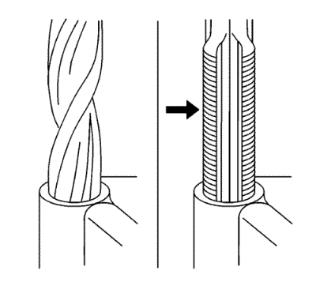
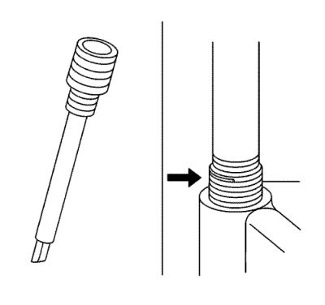

Piezas de suplemento de roscas
Juegos de reparación multiuso de roscas.
Estos juegos se venden en comercios.
Procedimiento de reparación
Advertencia: Consulte Advertencia, protección ocular en la sección Prólogo.

Nota: Consulte las indicaciones del fabricante del juego de reparación de roscas relativas al tamaño del macho de roscar y del taladro que se deben utilizar.
Evite la acumulación de virutas Retire hacia afuera el macho de roscar cada pocas vueltas y quite las virutas.
- Determine el tamaño, el paso de rosca y la profundidad de la rosca dañada. Si fuera necesario, ajuste los anillos de tope del aparato cortador y rosque hasta la profundidad requerida.
- Taladre las roscas dañadas. Limpie las virutas.
- Lubrique el macho de roscar con un poco de aceite de motor. Rosque el orificio. Limpie las roscas.

- Enrosque la pieza de suplemento en el mandril de la herramienta de montaje. Enganche la espiga de la pieza de suplemento en el extremo del mandril.
Nota: La pieza de suplemento debe estar embutida hasta una vuelta por debajo de la superficie.
- Lubrique la pieza de suplemento con un poco de aceite de motor, menos cuando monte en aluminio y coloque la pieza de suplemento.
- Si la espiga de la pieza de suplemento no se desprende al retirar la herramienta de montaje, rómpala con un botador.
| © Copyright Chevrolet Europe. All rights reserved |